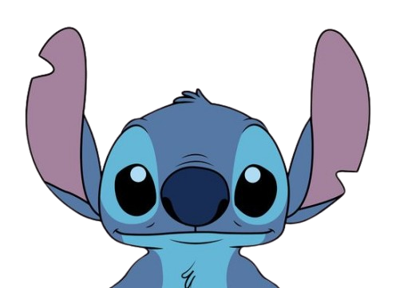
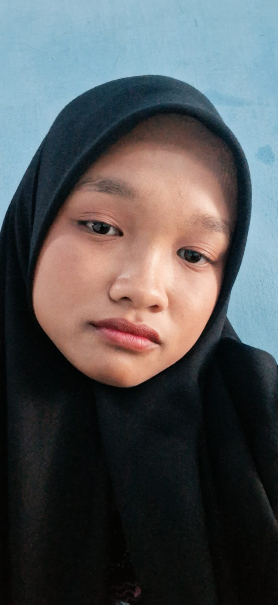
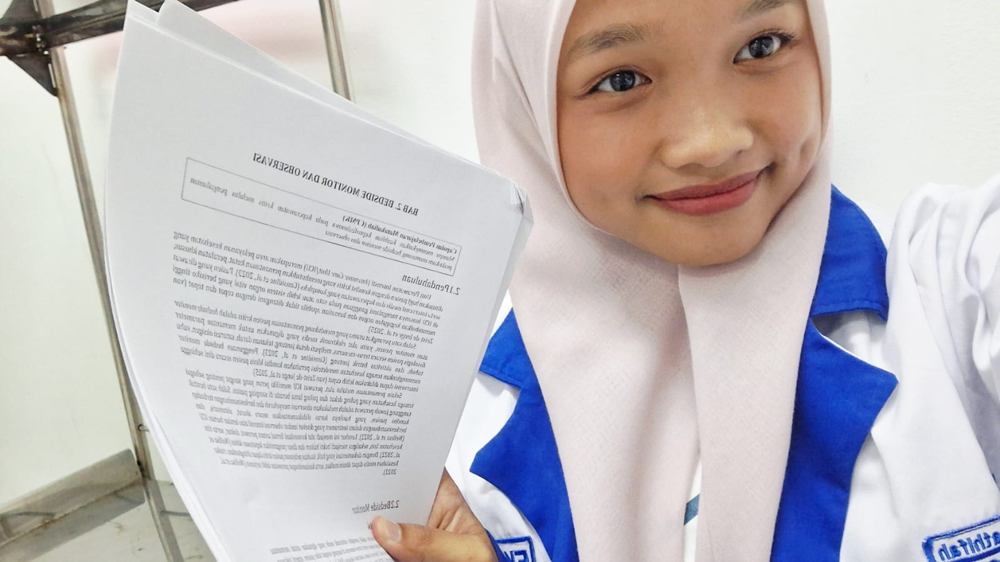
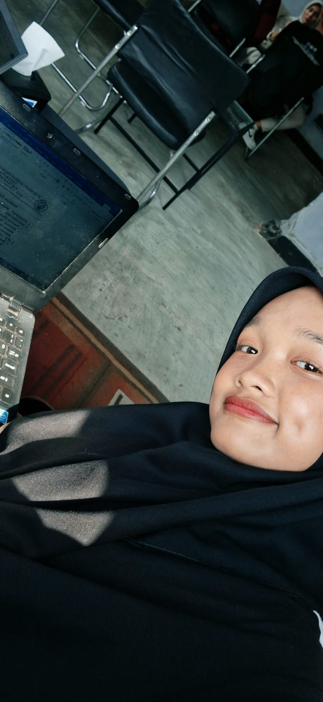
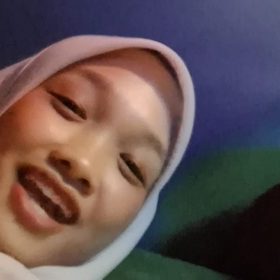

Happy Semprotulation 🎉

ini ntuuut

ini mbuuut

iniiii ........
"Akhirnya selesai juga sempronya wkwk. Selamat yaa 🤍 Aku ikut seneng lihat kamu bisa sampai di tahap ini. Kalau dipikir-pikir lucu juga ya, awalnya kita cuma kenal karena KKN, aku kordes dan kamu sekretaris. Dari yang awalnya
cuma sering bahas urusan KKN, malah jadi sering ngobrol, bercanda, chatan, telfonan, dan akhirnya bisa sedekat ini.
Aku tahu selama prosesnya pasti ada capek, bingung, dan hal-hal yang bikin kepikiran. Tapi kamu berhasil lewatin salah satu tahap pentingnya. Semoga setelah ini revisinya lancar, nggak bikin pusing banget wkwk, dan
skripsinya bisa segera selesai. Aku bakal ikut seneng kalau nanti bisa lihat kamu sampai wisuda.
Makasih juga ya, selama beberapa bulan ini kamu sudah jadi orang yang sering nemenin aku, bercanda, ngobrol. Gak nyangka dari KKN malah bisa dapat calon jodoh gini 😭😂 Dan mungkin aku juga mau jujur sedikit.
Aku tahu sekarang kita lagi ada masalah, dan kamu sempat kepikiran buat pergi dan jadi asing. Aku gak mau maksa kamu buat tetap di sini. Aku cuma mau kamu tahu kalo aku sebenarnya gak mau kehilangan kamu. Aku udah
terbiasa ada kamu, jadi kalo tiba-tiba harus asing rasanya pasti gak gampang.
Sekali lagi, selamat yaa buat sempronya. Kamu udah lewatin satu tahap lagi. Sekarang boleh lega dikit, tapi jangan terlalu lama santainya 😭😂 "
Silakan isi form ini jika Anda (Bu Sekre) memaksa ingin menjauh dari Kordes.
Pilih satu kado dibawah buat hadiah Sempromu!
Kado 1
Kado 2
Kado 3
Screenshot *voucher* ini dan kirim ke WA Pak Kordes buat diklaim!
(Masa berlaku: Sampai Urusan Bab 5 Kelar)